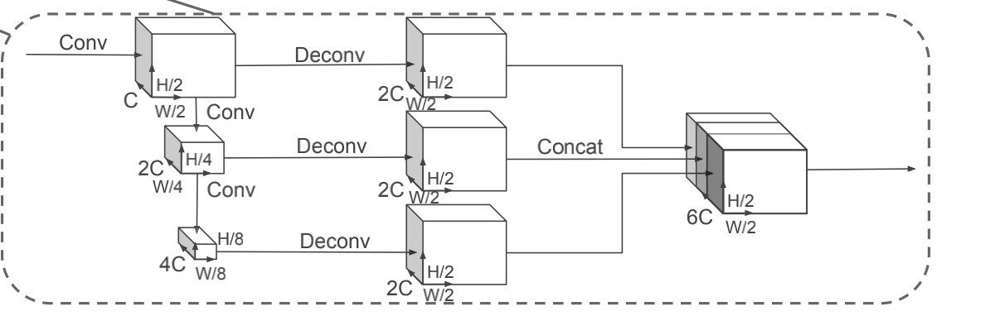
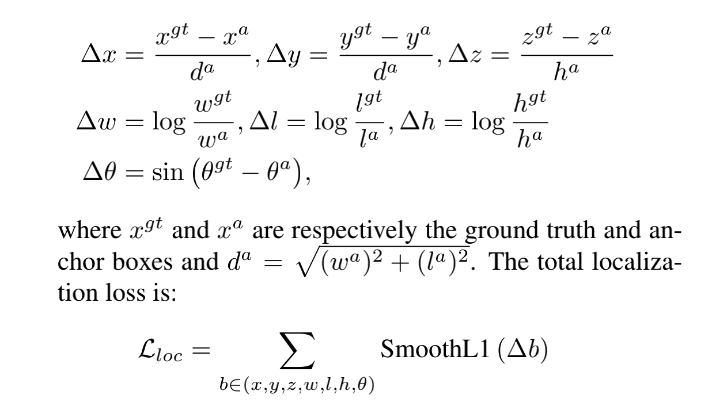
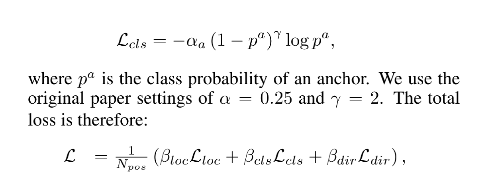

<!DOCTYPE html>
<html xmlns="http://www.w3.org/1999/xhtml" lang="zh" xml:lang="zh">
<head>
  <meta charset="utf-8" />
  <meta name="generator" content="pandoc" />
  <meta name="viewport" content="width=device-width, initial-scale=1.0, user-scalable=yes" />
  <meta name="last_modified" content="2021-01-31T00:42:18Z" />
  <meta name="published" content="Jan 30, 2021" />
  <title>PointPillars:点云目标检测</title>
  <link rel="stylesheet" href="/static/style.css" />
  <link rel="stylesheet" href="/static/syntax-highlighting.css" />
  <style>
      code{white-space: pre-wrap;}
      span.smallcaps{font-variant: small-caps;}
      span.underline{text-decoration: underline;}
      div.column{display: inline-block; vertical-align: top; width: 50%;}
  </style>
  <!--[if lt IE 9]>
    <script src="//cdnjs.cloudflare.com/ajax/libs/html5shiv/3.7.3/html5shiv-printshiv.min.js"></script>
  <![endif]-->
  <link rel="icon" href="/static/favicon.ico" type="image/x-icon"/> <link rel="shortcut icon" href="/static/favicon.ico" type="image/x-icon" />
  <meta name="author" content="Yanjie Ze">
  <meta name="viewport" content="width=device-width, initial-scale=1" />
  <script> window.dataLayer = window.dataLayer || []; function gtag(){dataLayer.push(arguments);} gtag('js', new Date());
  gtag('config', 'UA-116308654-1'); </script>
</head>
<body>
<a id="return" href="/">  </a>
<header id="title-block-header">
<h1 class="title">PointPillars:点云目标检测</h1>
<p class="date">Jan 30, 2021</p>
</header>
<p>为了将这篇paper复现出来，需要对其流程以及参数都更加熟悉。 # 一、算法流程</p>
<p>分为三个部分：Pillar Feature Net，Backbone（2D CNN），Detection Head（SSD）。 ## 第一部分：Pillar Feature Net <strong>这一部分将点云转化为pseudo-image。</strong></p>
<p>设点云中的一个点为l=(x,y,z,r)。</p>
<p>第一步将点云离散化为成xy平面上的许多网格，形成一系列pillars，每个面积为B。</p>
<p>然后将每个pillar的点数据增强，即<strong>将l=(x,y,z,r)加上(x_c,y_c,z_c,x_p,y_p)这五个维度，变为：l=(x,y,z,r,x_c,y_c,z_c,x_p,y_p),维度D=9</strong>。其中c下标表示与pillar中的所有点的距离的算术平均，p下标表示pillar的中心坐标偏移量。</p>
<p>由于点云是稀疏的，为了获得较好的tensor（D，P，N），需要做一些处理。（P表示Sample的数量，N表示Pillar的数量。）<strong>对于比较密的，进行随机采样。对比很稀疏的，用0填充。</strong></p>
<p>然后，使用一个简化版的PointNet。<em>一个线性层+一个Batch Norm+一个ReLU，生成（C，P，N）大小的tensor。然后用一个max操作，获得（C，P）大小的tensor。注意，线性层可以用1✖️1的卷积核，效果好。</em></p>
<p>编码后，这些特征分散到原来的pillar的位置，创建一个（C，H，W）的伪图像。H和W是画布的高度和宽度。</p>
<p><strong>第一部分总结</strong>：点云离散为pillar -&gt; 每个点数据增强 -&gt; 对于疏密进行不同处理 -&gt; Pointnet解码 -&gt;生成伪图像。</p>
<h2 id="第二部分backbone">第二部分：Backbone</h2>
<center>

</center>
<p>结构如图。</p>
<p>有两个子网络：一个自上而下的网络，以越来越小的空间分辨率产生特征，另一个网络执行自上而下特征的上采样和拼接。</p>
<p>自上而下的网络用一系列Block（S，L，F）描述。每个Block以步长S移动。每个Block有L个3✖️3的2维卷积层，输出F个通道，并接着BatchNorm 和 ReLU。层中的第一个卷积的步长为S/S_in。剩下的步长为1。（？）</p>
<p>从每个自上而下的网络的最终特征由上采样和拼接聚合。首先，上采样为（S_in，S_out，F），用一个2维卷积核。接着，BatchNorm和ReLU。最后的输出是来自不同步长的拼接。</p>
<p><strong>第二部分总结</strong>：几个不同步长的卷积核进行卷积 -&gt; 上采样 -&gt; 拼接。</p>
<h2 id="第三部分detection-head">第三部分：Detection Head</h2>
<p>使用SSD。</p>
<h1 id="二实现细节">二、实现细节</h1>
<p>实现细节分为两部分，Network和Loss。</p>
<h2 id="第一部分network">第一部分：Network</h2>
<p>所有权重以正态分布随机初始化。</p>
<p>encoder network的输出特征维度C=64.</p>
<p>车、行人、骑车人的第一个Block不同。（S=2 for car， S=1 for pedestrian/cyclist）。</p>
<p>2个网络都有3个Block。Block1(S, 4, C), Block2(2S, 6, 2C), and Block3(4S, 6, 4C)。每个Block上采样： Up1(S, S, 2C), Up2(2S, S, 2C) and Up3(4S, S, 2C)。然后合成6C个特征。</p>
<h2 id="第二部分loss">第二部分：Loss</h2>
<p>ground truth boxes 和 anchors定义：（x,y,z,w,l,h,theta） 第一个loss：localization loss</p>
<center>

</center>
<p>第二个loss：softmax classification loss on the discretized directions（L_dir）</p>
第三个loss：object classification loss使用了focal loss。
<center>

</center>
<p>上面这个式子为最终的loss。其中N_pos为positive anchors的数量，beta_loc =2 , beta_cls = 1, beta_dir = 0.2。</p>
<p>优化器：Adam。初始learning rate=2*10^-4，decay = 0.8 every 15 epochs。</p>
<p>一共训练160 epochs。</p>
<p>batch size = 2 for validation set， 4 for test submission。</p>
<h1 id="三实验设置">三、实验设置</h1>
<p>分为三个部分：数据集，参数设置，数据增强。</p>
<h2 id="第一部分数据集">第一部分：数据集</h2>
<p>kitti数据集，既包含雷达点云也包含图像。</p>
<p>原始的数据集是7481个training， 7518个testing。</p>
<p>实验中，将training分为3712个trianing，3769个validation。在test submission中，784个来自validation， 在剩下的6733 samples训练。</p>
<p>训练三个网络分别识别车，行人，骑车人。</p>
<h2 id="第二部分设置">第二部分：设置</h2>
<p>xy resolution: 0.16</p>
<p>max number of pillars(P): 12000</p>
<p>max number of points per pillar(N):100</p>
<p>每一个class anchor用width，length，height，z center来描述，两个朝向：0度，90度。</p>
<p>Anchors are matched to ground truth using the 2D IoU with the following rules. A positive match is either the highest with a ground truth box, or above the positive match threshold, while a negative match is below the negative threshold. All other anchors are ignored in the loss.</p>
<p>At inference time we apply axis aligned non maximum suppression (NMS) with an overlap threshold of 0.5 IoU.This provides similar performance compared to rotational NMS, but is much faster.</p>
<h3 id="car">Car：</h3>
<p>The x, y, z range is [(0, 70.4), (-40, 40), (-3, 1)] meters respectively. The car anchor has width, length, and height of (1.6, 3.9, 1.5) m with a z center of -1 m. Matching uses positive and negative thresholds of 0.6 and 0.45.</p>
<h3 id="pedestrian-cyclist">Pedestrian &amp; Cyclist：</h3>
<p>The x, y, z range of [(0, 48), (-20,20), (-2.5, 0.5)] meters respectively. The pedestrian anchor has width, length, and height of (0.6, 0.8, 1.73) meters with a z center of -0.6 meters, while the cyclist anchor has width, length, and height of (0.6, 1.76, 1.73) meters with a z center of -0.6 meters. Matching uses positive and negative thresholds of 0.5 and 0.35.</p>
<h2 id="第三部分data-augmentation">第三部分：Data Augmentation</h2>
<p>明天再说。</p>
<a style="color:black;font-size:2em;float:right;margin-right:30px;margin-bottom:40px;" href="../">[Return to the homepage]</a>
<script>
var code_blocks = document.querySelectorAll("pre.sourceCode");
code_blocks.forEach(function(block) {
  block.classList.add("numberSource");
  block.classList.add("numberLines");
});
</script>
</body>
</html>
